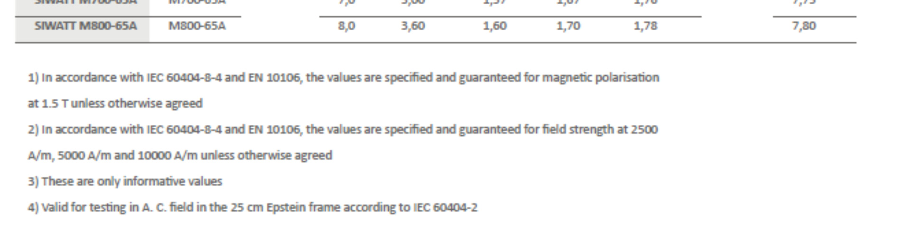

NALOGA 03: Izgube in napajalne razmere transformatorja
Transformator ima podane naslednje tehnične podatke in parametre nadomestnega vezja:
- Nazivna navidezna moč: \(S_n = 50 \text{ kVA}\)
- Prestavno razmerje: \(p = \frac{N_1}{N_2} = 6\)
- Nazivna primarna napetost: \(U_{1n} = 2400 \text{ V}\)
- Nazivna frekvenca: \(f_n = 42 \text{ Hz}\)
- Izgube v prostem teku: \(P_0 = 300 \text{ W}\)
- Ohmska upornost primarnega navitja: \(R_1 = 0.76 \ \Omega\)
- Ohmska upornost sekundarnega navitja: \(R_2 = 0.006 \ \Omega\)


Opomba: Podane vrednosti upornosti (\(R_1, R_2\)) veljajo za toplo stanje navitij pri normalni obratovalni temperaturi 75 °C.
- Določite razmerje izgub \(P_{Cun} / P_{Fen}\) pri nazivnem obratovalnem stanju (ko je transformator polno obremenjen z nazivno močjo).
- Določite razmerje izgub \(P_{Cu} / P_{Fe}\) pri spremenjenih napajalnih razmerah: efektivna vrednost napetosti se ohrani (\(U_1' = U_{1n}\)), vendar se poveča frekvenca na \(f' = 50 \text{ Hz}\).
Vrste izgub v električnem stroju
Izgube v transformatorjih (in hlajenje): Energija se pri nobenem pretvorniku ne pretvori 100% učinkovito. Kar se izgubi, se pretvori v toplotno energijo (segrevanje). Te izgube delimo v dve glavni veji. Prva veja so izgube v železu (\(P_{Fe}\)), ki nastanejo zaradi premagnetenja jedra (histerezne izgube) in vrtinčnih tokov – te izgube so prisotne celo takrat, ko transformator stoji prazen na mizi in je priključen le na vtičnico! Druga veja pa so izgube v bakru (\(P_{Cu}\)), ki pa so povsem odvisne od tega, koliko "toka" (bremena) obremenimo na transformator. Segrevanje teh dveh delov zahteva v praksi premišljen hladilni sistem z rebri ali celo s prečrpavanjem transformatorskega olja.
Potek reševanja (Korak za korakom)
Osnove in predpostavke
Vemo, da je tok prostega teka (\(I_0\)) mnogo manjši od nazivnega toka (\(I_n\)). Zaradi tega lahko rečemo, da so izgube na bakru v času prostega teka zanemarljivo majhne. Posledično lahko izgube prostega teka (\(P_0\)) aproksimiramo zgolj z izgubami v feromagnetnem jedru transformatorja:
a) Izračun nazivnih izgub v bakru in razmerja
Izgube v bakru se seštevajo iz toplotnih izgub (\(P = I^2 \cdot R\)) obeh navitij (primarja in sekundarja):
Potrebujemo vrednosti nazivnih tokov obeh strani. Tok lahko izračunamo iz podane nazivne moči \(S_n\) in ustrezne napetosti (tu uporabimo enofazno moč \(S = U \cdot I\)):
Sekundarni tok najlažje dobimo preko podanega prestavnega razmerja (\(p = \frac{N_1}{N_2} = \frac{I_2}{I_1}\), zato \(I_2 = I_1 \cdot p\)):
Vstavimo tokove in upornosti v enačbo za izgube v bakru:
Sedaj izračunamo iskano razmerje med izgubami v bakru in železu pri nazivnem obratovalnem stanju:
Opomba iz prakse: Pri običajnih transformatorjih je razmerje izgub pogosto blizu 3. Ta transformator je zasnovan z močnejšim poudarkom na manj izgub v bakru.
b) Vpliv povečane frekvence in U/f regulacija
Zanima nas, kaj se zgodi, če napravo (ki je zasnovana za 42 Hz) priklopimo na sodobnejše 50 Hz omrežje, pri isti nazivni napetosti \(U_1\). Ker se napetost ni spremenila, lahko sklepamo, da bo transformator še vedno poganjal isti efektivni bremenski tok \(I_n\). Zato izgube v bakru ostanejo nespremenjene!
Odvisnost izgub v železu od magnetne gostote (B) in frekvence (f) lahko zapišemo z enačbo: \( P_{Fe} \propto f \cdot B^2 \). Enačbo za dve različni stanji lahko zapišemo v obliki razmerja:
Iz Faradayovega zakona za izmenično polje (\(U = 4.44 \cdot f \cdot N \cdot B \cdot S\)) lahko izrazimo magnetno gostoto:
Ker se napetost ne spremeni (\(U' = U\)), velja:
Vstavimo to razmerje nazaj v enačbo za izgube v železu in pokrajšamo:
Zato so nove izgube v železu enake:
Sedaj lahko izračunamo novo razmerje izgub v teh spremenjenih razmerah:
Fizikalno ozadje: Če povečamo frekvenco (in ohranimo napetost), magnetnemu pretoku "ne uspe" več zrasti do tako velike amplitude v vsaki krajši polperiodi. Zato se magnetna gostota (\(B\)) v železu ZMANJŠA. Manjše premetavanje domen (manjši \(B\)) povzroči manj izgub, zato se jedro manj segreva (\(252 \text{ W} < 300 \text{ W}\)). Prav to je ključen razlog, zakaj sodobni letalski ali vesoljski sistemi uporabljajo omrežja s frekvenco 400 Hz! Pri višji frekvenci lahko za enako moč uporabijo bistveno manjša (in lažja!) železna jedra, ne da bi se ta pregrevala. Pravilo o ohranjanju razmerja (\(U/f = \text{konst.}\)) pa uporabljajo napajalni pretvorniki (inverterji) električnih pogonov pri regulaciji vrtilne hitrosti motorjev, da preprečijo nasičenje jedra pri nizkih obratih.
Kviz 03: Vpliv frekvence na moč in težo
V letalstvu uporabljajo omrežja s frekvenco 400 Hz namesto standardnih 50 Hz. Iz predhodne razlage o vplivu frekvence na magnetno gostoto B in velikost stroja: Kakšen je glavni fizikalno-konstrukcijski vpliv te visoke frekvence na električne stroje, ki omogoča, da so ti stroji idealni za letala?